트레이딩뷰는 어떤 프로그램인가요
이 영상은 "내가 정한 투자 규칙이 정말 통할까?"를 과거 주가로 확인해 보는 법을 다뤄요. 진행자 두 사람이 『트레이딩뷰 처음 공부』의 저자 이정호 작가를 불러 함께 실습해요. 뒤쪽 화면에는 이날의 주제인 'AI로 시작하는 백테스트 입문'이 떠 있어요.
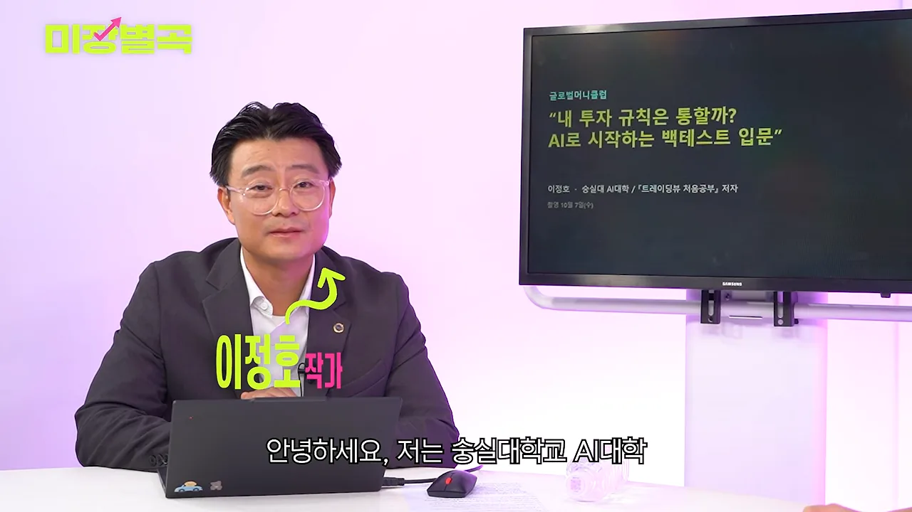
트레이딩뷰가 기존 HTS와 다른 점
트레이딩뷰는 전 세계 사용자가 1억 명이 넘는 차트·매매 플랫폼이에요. 작가가 책을 쓰기 시작할 때는 6천만 명 정도였다고 해요. 작가가 꼽는 차이는 두 가지예요.
- 운영체제를 가리지 않아요. 국내 HTS(Home Trading System)·MTS(Mobile Trading System)는 윈도우 기준으로 만들어져 맥이나 아이폰에서 안 되는 경우가 많아요. 트레이딩뷰는 웹 브라우저만 열면 돼요.
- 증권사를 넘나들며 주문할 수 있어요. 예전에는 한 증권사 안에서도 국내 주식·선물·해외 선물·해외 주식 앱을 따로 깔아야 했어요. 트레이딩뷰에서는 차트 위에서 브로커만 고르면 돼요.
아래 화면이 그 브로커 선택 창이에요. 맨 왼쪽 위 'Paper Trading'(모의 거래)부터 바이낸스, 바이비트, 인터랙티브 브로커스 같은 거래소·증권사 아이콘이 줄지어 있어요. 작가는 국내에서는 2026년 6월 29일부터 키움증권이 이 연결을 시작했다고 말해요.
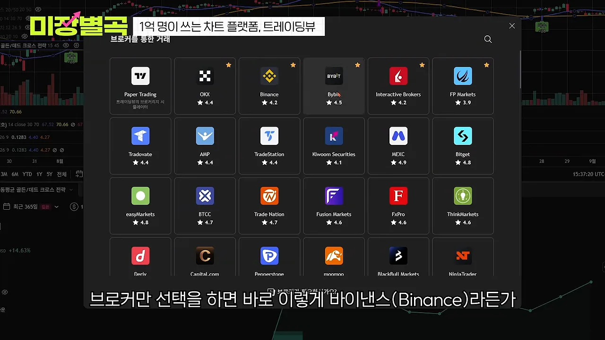
꼭 연결할 필요는 없어요. 차트로 자기 전략만 세운 다음, 평소 쓰는 증권사에서 주문을 넣어도 된다고 진행자와 작가 모두 짚어요.
기술적 분석과 백테스트·포워드 테스트
투자 분석은 크게 두 갈래로 나뉘어요. 화면 왼쪽 아래 자막 카드가 두 가지를 한 줄씩 정리해 줘요.
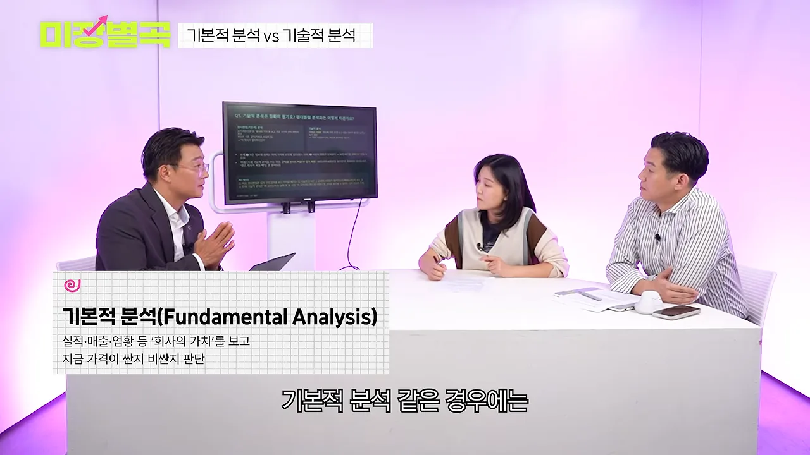
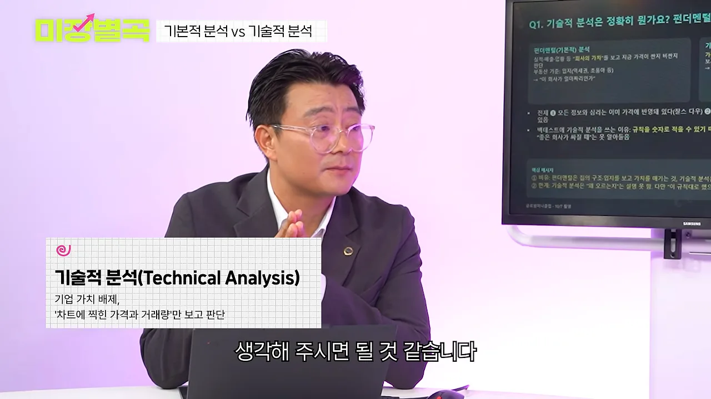
작가에 따르면 차트에는 사실 가격과 거래량, 두 가지 정보밖에 없어요. 가격을 가공해서 만든 것을 보조 지표라고 하고, 지금까지 나온 보조 지표를 엮어 쓰는 것이 매매 전략이에요. 부동산에 빗대면 "요즘 사람들이 많이 사고 가격이 오르는 곳을 산다"는 생각에 가까워요.
백테스트는 기출문제 풀이예요
백테스트는 내 투자 규칙을 과거 주가에 적용해서 쓸 만한 전략인지 검증하는 거예요. 작가는 수능 전에 기출문제를 풀어 보는 것에 비유해요. 문제도 정답도 이미 알고 있으니, 점수가 좋아도 앞으로의 시험을 보장하지는 않아요.
그래서 백테스트가 끝나면 곧바로 매매하지 말고 포워드 테스트를 하라고 해요. 수수료와 슬리피지 같은 실제 매매 조건을 똑같이 넣어 두고, 짧게는 6개월 길게는 1년까지 모의 계좌로 돌려 보는 거예요. 진행자가 "시뮬레이션을 돌리는 거냐"고 묻자 작가는 그렇다고 답해요.
작가는 기관도 같은 절차를 밟는다고 해요. ETF(Exchange Traded Fund)나 펀드의 매수·매도 버튼은 프랍 데스크에서 누르는데, 이들은 백테스트로 수익과 최대 손실을 확인하지 않은 상품은 만들지도 팔지도 않는다고 해요. 백테스트와 포워드 테스트를 하느냐가 기관과 개인의 차이 중 하나이고, 이걸 잘하는 개인은 격차를 줄일 가능성이 높다고 봐요.
실전 경험과 '과거가 미래에도 통할까'
작가는 주로 나스닥 15분 차트로 매매해요. 전략을 만들고, 백테스트로 걸러 내고, 포워드 테스트까지 하는 것이 전략 개발의 기본 절차라고 해요. 이렇게 만든 전략으로 실전 투자 대회에도 나갔어요.
핵심은 한 전략이 모든 장에 맞지 않는다는 점이에요. 상승장, 하락장, 횡보장마다 성격이 달라요. 작가는 2024년 2~3월을 횡보장으로 보고 그에 맞는 전략을 골랐고, 나스닥 선물로 2주 동안 60% 수익을 냈다고 해요. 평소에는 연 100% 정도를 생각한다고 말해요. 이 숫자는 작가 본인의 이야기이고, 영상에서 거래 내역을 보여 주지는 않아요.
나스닥이나 코인은 기본적 분석으로 볼 거리가 별로 없고, 내일 어떤 뉴스가 나올지 아무도 몰라요. 그래서 차트로 만든 전략만 쓰고 감정을 빼고 매수·매도를 컴퓨터에 맡긴다고 해요.
"과거 데이터가 AI 시대에도 통할까?"
진행자는 펀더멘털을 중시하는 투자자들의 반론을 꺼내요. 90년대·2000년대 데이터를 다 알아도, AI와 반도체가 이만큼 발전한 지금 같은 패턴이 나오겠느냐는 거예요. 작가는 바로 그래서 포워드 테스트를 같이 해야 한다고 답해요. 기술적 분석은 모든 정보와 사람들의 심리가 가격에 담겨 있고, 사람들이 어느 수준에서 사고 어느 수준에서 판다는 전제 위에 서 있어요. 과거 수익률이 높은 펀드에 사람들이 몰리는 것과 같은 편향이 반영된 것이라고도 말해요.
작가가 영상 곳곳에서 말한 검증 순서를 한 줄로 이으면 이래요. 마지막 두 단계는 영상 끝부분(46:59 부근)에서 나와요.
차트의 기초: 봉, 이동평균선, 골든 크로스
차트를 읽으려면 먼저 봉과 이동평균선을 알아야 해요. 아래 그림은 봉 하나가 담고 있는 네 가격을 보여 줘요. 왼쪽 초록 봉은 끝가가 시작가보다 높아서 오른 것(양봉), 오른쪽 빨간 봉은 끝가가 더 낮아서 내린 것(음봉)이에요. 몸통 위아래로 삐져나온 가는 선의 끝이 그 시간 동안의 최고가와 최저가예요.
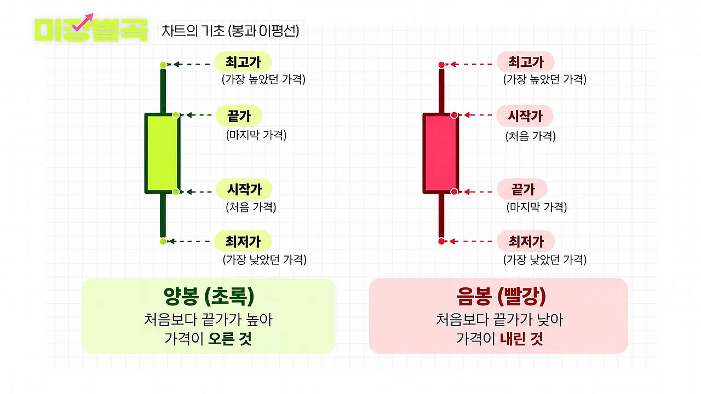
봉 하나가 담는 기간은 차트마다 달라요. 1시간 봉이면 한 시간에 하나, 일봉이면 하루에 하나가 생겨요. 이동평균선은 이 봉들의 평균을 이어 그린 선이에요. 20 이동평균선이라면 최근 봉 20개의 평균값을 계속 이어 그린 거예요. 보통 짧은 선, 중간 선, 긴 선 세 개를 함께 써요. 전체 추세는 120일선처럼 긴 선으로, 단기 흐름은 20선 같은 짧은 선으로 봐요.
골든 크로스와 데드 크로스
작가는 QQQ 1시간 봉 차트로 보여 줘요. 흰색이 짧은 20 이동평균선, 붉은색이 긴 50 이동평균선이에요. 흰 선이 붉은 선을 아래에서 위로 뚫고 올라가는 곳에 초록 '매수' 표시가, 위에서 아래로 내려가는 곳에 빨간 '매도' 표시가 붙어 있어요.
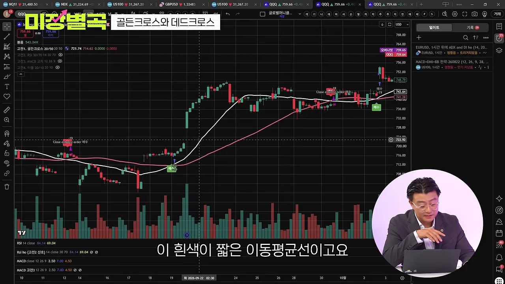
교차 지점 날짜를 확대하면 아래쪽 노란 상자에 '2026-09-19 00:30'이 보여요. 이때가 골든 크로스였고, 9월 30일 새벽 3시 30분에 데드 크로스, 10월 2일에 다시 골든 크로스가 났어요.
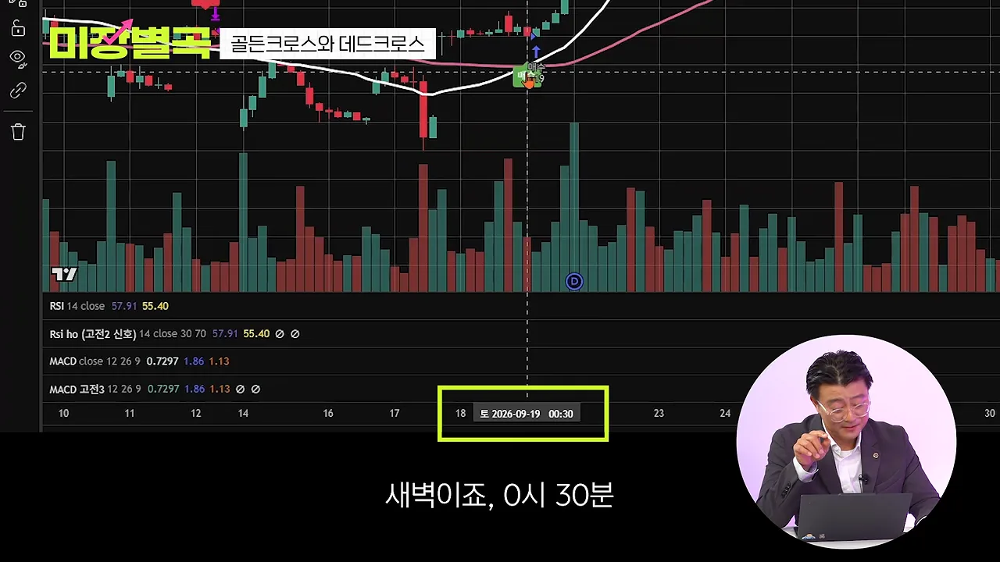
골든 크로스는 긴 추세선을 짧은 선이 뚫었으니 추세가 바뀌었다는 신호로 읽혀요. 그래서 시스템 트레이더들은 추격 매수 시점으로 보기도 해요. 다만 작가는 크로스 하나만 보지 말고 거래량과 다른 보조 지표까지 확인해서, 상승을 확신할 때만 들어가라고 권해요. 실제로 돈이 되는지는 뒤의 백테스트로 확인해요.
고전 전략 네 가지
작가는 오래 써 온 '고전 전략' 네 가지를 골라 와요. 먼저 큰 틀부터 나눠요. 하나는 추세 추종 전략이고, 다른 하나는 회귀 전략이에요.
추세 추종은 "하이닉스가 160만 원을 넘으면 사야지"처럼 일정 수준을 넘을 때 올라타는 방식을 공식으로 만든 거예요. 회귀는 "이 정도 떨어졌으면 반등하겠지" 하는 감을 숫자로 바꾼 거예요. 진행자는 이를 "공포에 사고 뉴스에 팔라"를 차트로 옮긴 것이라고 요약해요.
골든 크로스: 느리지만 큰 추세를 끝까지
신호가 1년에 몇 번 나오지 않아요. 대신 큰 추세가 오면 끝까지 탈 수 있어요. 단점은 이동평균선이 느리다는 거예요. 시장이 갑자기 급락하면 포지션을 정리할 시간이 부족할 수 있어요.
RSI: 30과 70 사이를 벗어나면
아래 그림에서 곡선이 위쪽 빨간 띠(70 이상)에 들어가면 과매수, 아래쪽 초록 띠(30 이하)에 들어가면 과매도예요. 그림 아래 설명처럼 최근 14개 봉 동안 오른 힘과 내린 힘을 비교해 0~100으로 나타내요. 체온계처럼 정상 범위를 벗어나면 되돌아온다는 성질을 이용해서 "빠졌을 때" 사요.
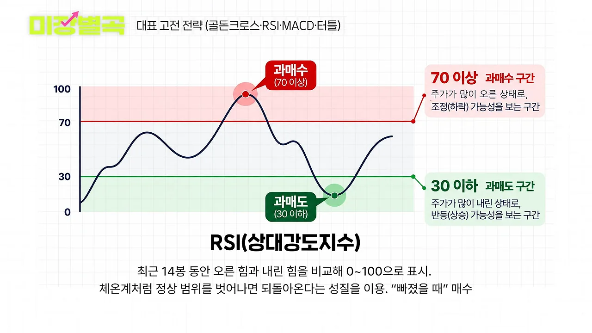
MACD: 이동평균의 이동평균
그림 위쪽에는 가격과 빠른 이동평균선(연두)·느린 이동평균선(초록)이 있어요. 아래쪽 MACD는 두 선 사이의 거리를 선으로 그린 거예요. 두 선이 벌어지면 MACD가 커지고(빨간 언덕), 반대로 벌어지면 작아져요(파란 골짜기).
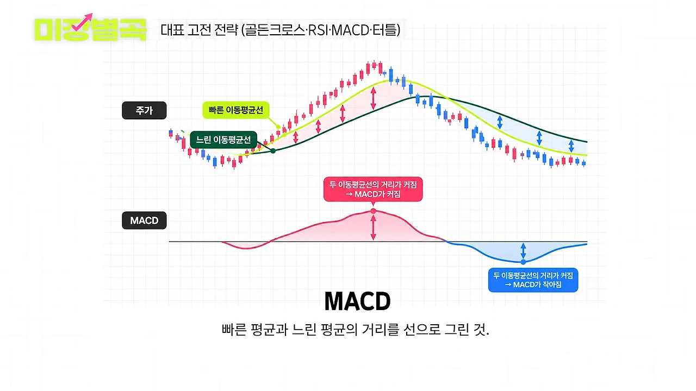
터틀: 넘지 못하던 자리를 넘으면
터틀 전략은 1980년대에 크게 유행했어요. "거북이(초보자)도 따라 할 수 있다"는 데서 이름이 왔다고 작가는 설명해요. 아래 그림에서 왼쪽 연두 점선이 최근 20개 봉의 최고가예요. 가격이 이 선을 넘는 순간 '매수'가 찍혀요. 오른쪽 파란 점선은 최근 10개 봉의 최저가이고, 여기를 깨면 '매도(청산)'예요.
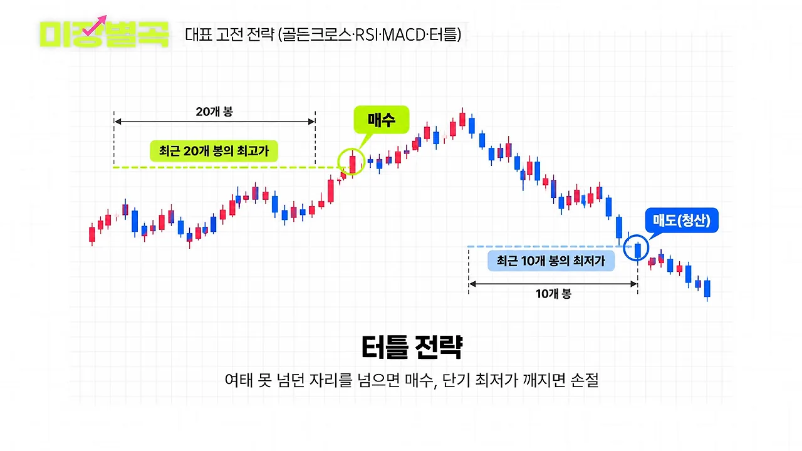
말로는 작가가 "20개 봉의 최저점에 닿으면 판다"고 했지만, 화면 그림과 백테스트 설정 이름('터틀 20/10')은 청산에 최근 10개 봉의 최저가를 써요. 앞에서 말한 불타기가 바로 이 터틀 돌파 같은 방식이에요.
RSI 전략 백테스트
이제 실제 백테스트예요. 먼저 골든 크로스 전략을 차트에 띄워 "골든 크로스에 사고 데드 크로스에 판다"를 보여 준 뒤, RSI로 넘어가요. 작가는 RSI를 차트 아래 칸에 따로 붙였어요. 아래 칸의 보라색 띠가 30~70 구간이고, 곡선이 띠 아래에서 올라오는 곳에 초록 '매수', 위에서 내려오는 곳에 빨간 '매도'가 찍혀 있어요.
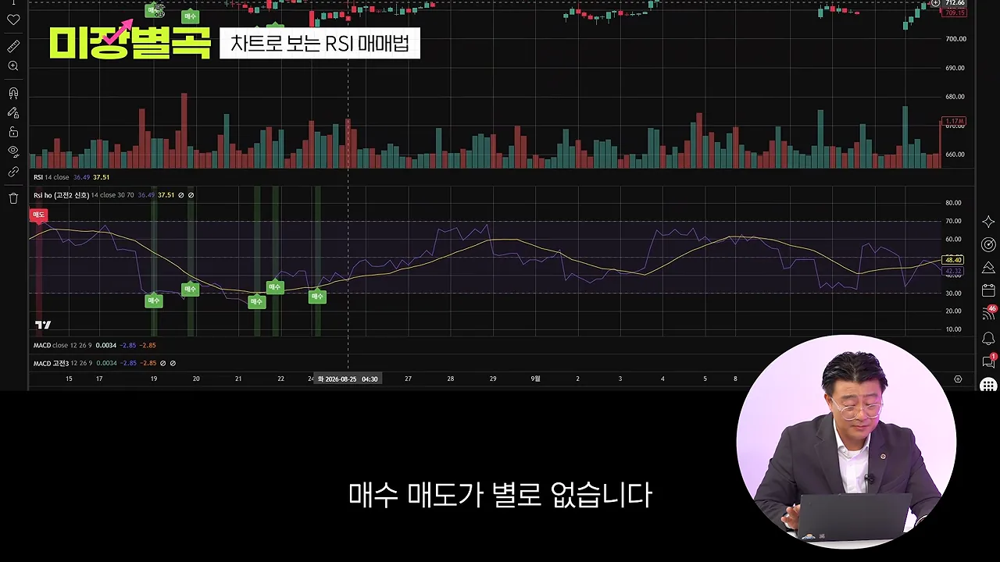
백테스트 기간은 2025년 10월 1일부터 2026년 9월 29일까지, 자본금은 1만 달러예요. 화면 아래 '주요 통계' 칸에서 네 숫자를 읽으면 돼요.
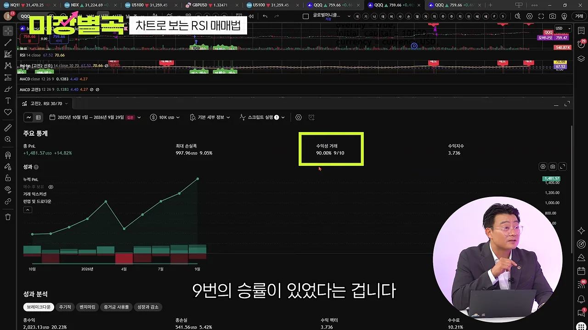
| 화면 항목 | 값 | 작가의 해석 |
|---|---|---|
| 총 PnL(손익) | +14.82% | 기간 전체의 수익률이에요 |
| 최대 손실폭 | 9.05% | 한 번, 또는 연속으로 졌을 때 자산이 얼마나 줄 수 있는지예요 |
| 수익성 거래 | 9/10 | 잽으로 아홉 번 먹고, 한 번 크게 당한 거예요 |
| 수익지수 | 3.736 | 1에 가까우면 운이고, 3~4로 멀어지면 전략으로 의미가 있어요 |
상승장에서는 그냥 들고 있는 게 나았어요
진행자가 묻는 게 핵심이에요. 같은 기간 QQQ를 처음에 사서 9월 29일까지 그냥 들고 있었다면 어땠을까요? 벤치마크 탭을 보면 21%였어요. RSI 전략(14.82%)보다 높아요. 이 기간이 상승장이었기 때문이에요.
작가는 기간을 2021년 10월 1일~2022년 9월 29일 하락장으로 바꿔서 다시 돌려요. 그냥 들고 있었다면 -20% 손실을 견뎌야 했어요. 같은 기간 RSI로 매매했다면 손실은 0.14%에 그쳤어요. 작가는 -20%가 되면 팔지 않고 버틸 사람이 많지 않다고 말해요. 기계는 감정이 없어서 신호가 나면 그대로 팔기 때문에 하락폭을 줄일 수 있었어요.
그렇다고 앞으로도 QQQ에 RSI가 통한다는 보장은 없어요. 작가는 다시 한번 "기출문제 풀이일 뿐"이라고 짚어요. 대형 금융사는 전략 하나에 몰빵하지 않고 수백, 수천 개를 동시에 돌려 균형을 맞춰요. 그래서 이름난 투자자들도 연 수익률이 10~20%대에 머무는 거라고 설명해요. 지금 본 RSI 규칙도 RSI 매매법 중 가장 기초적인 형태예요.
MACD와 터틀 전략 백테스트
MACD는 원래 가격 차트 위에 그릴 수 없어서 아래 칸에 따로 붙였어요. 아래 칸에서 파란 선과 주황 선이 교차하는 곳마다 '매수'·'매도'가 촘촘하게 찍혀 있어요. 골든 크로스 전략보다 신호가 훨씬 잦다는 게 한눈에 보여요.
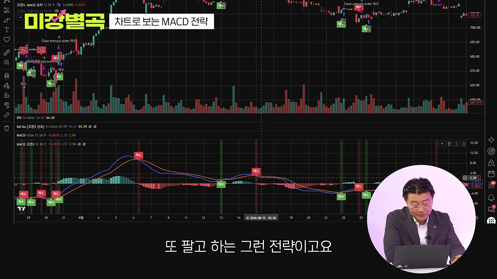
같은 상승장 기간(2025년 10월~2026년 9월)으로 돌린 결과예요. 아래쪽 누적 손익 그래프가 대부분 빨간 선으로 0 아래에 머물러 있어요. 최종 결과는 -5.19%로, 시장이 20% 가까이 오른 기간인데도 손실이에요.
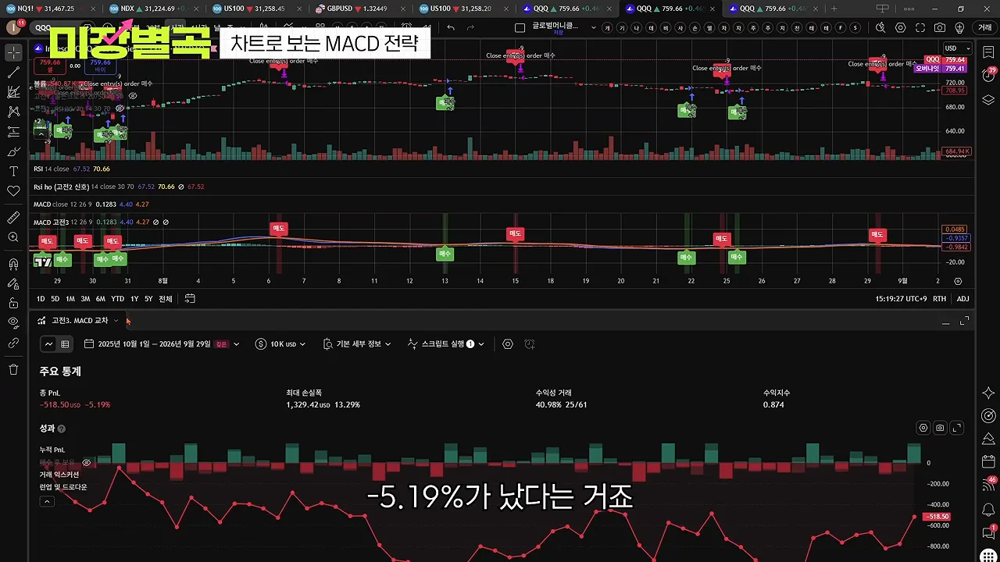
매매가 잦으면 수수료가 쌓여요
이 전략은 1년에 61번 매매했어요. 그만큼 수수료를 증권사에 내야 해요. 작가는 전략 설정의 '속성' 탭에서 수수료를 넣어 뒀다고 보여 줘요. 아래 화면 가운데 '수수료' 칸에 0.1, 단위는 '퍼센트'예요. 초기 자본 10,000달러, 기본 주문 크기는 자기자본 100%예요.
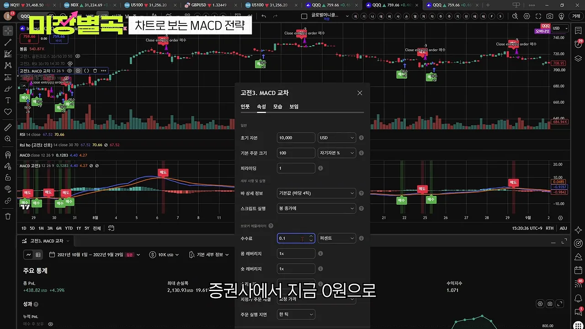
미국 주식은 수수료 0원인 증권사도 있어요. 그래도 작가는 환전 비용과 슬리피지를 생각하면 수수료를 넣어 두는 쪽이 실제에 더 가깝다고 해요. 주문을 넣었는데 가격이 이미 움직여 원하는 값에 체결되지 않는 일이 종종 생기기 때문이에요.
하락장(2021년 10월~2022년 9월)으로 바꾸면 결과가 뒤집혀요. 나스닥이 21.51% 떨어지는 동안 MACD 전략은 +4.39%를 냈어요. 진행자가 "RSI보다 방어력이 좋다"고 하자, 작가는 방어를 볼지 수익을 볼지는 가치 판단이 필요하다고 답해요.
터틀 전략
터틀 전략('고전4. 터틀 20/10')의 상승장 결과는 +11.56%예요. 주요 통계 칸에서 최대 손실폭 10.95%, 수익성 거래 9/26, 수익지수 1.549도 함께 보여요.
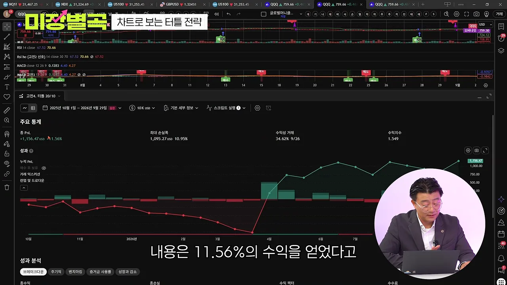
같은 기간 그냥 들고 있었다면 20.41%였으니, 작가 말대로 보면 8%포인트쯤 손해를 본 셈이에요. 하락장에서는 들고만 있을 때 -23%였는데, 터틀은 -5% 정도로 막았어요. 영상에 나온 숫자를 모으면 이래요.
| 전략 | 상승장 2025.10~2026.9 | 하락장 2021.10~2022.9 | 매매 횟수(상승장) |
|---|---|---|---|
| 골든 크로스 | +5.36% | 영상에서 안 보여 줌 | 20회 |
| RSI | +14.82% | -0.14% | 10회 |
| MACD | -5.19% | +4.39% | 61회 |
| 터틀 | +11.56% | 약 -5% | 26회 |
| 그냥 들고 있기 | 약 +20~21% | 약 -20~-23% | — |
모두 QQQ 1시간 봉, 수수료 0.1% 기준이에요. 골든 크로스 상승장 숫자는 40:36의 비교표에서 가져왔어요. '그냥 들고 있기'는 전략마다 첫 매수 시점부터 재서 영상에서도 21%, 20.41%, -20%, -21.51%, -23%처럼 조금씩 달라요.
진행자는 이렇게 정리해요. 시스템 매매는 오를 때 들어가고 추세적으로 내릴 때 자동으로 팔도록 명령해 둔 거라서, 상승장에서는 다 먹지 못하지만 하락장에서는 손실을 덜 맞는 경향이 있어요. 작가는 이 네 가지가 오래 쓰여 온 입문용 공식이라 소개했을 뿐이고, 앞으로도 맞는다는 뜻은 아니라고 선을 그어요. 현업에서 쓰는 것과 비교하면 '근의 공식' 수준이라는 진행자의 말에도 동의해요.
코딩 없이 ChatGPT로 전략 만들기
그동안 개인 투자자에게 이런 전략은 문턱이 높았어요. 규칙을 공식으로 만들어 코딩해야 했기 때문이에요. 작가는 이제 AI 덕분에 코딩을 몰라도 백테스트를 할 수 있다며, 로그인도 하지 않은 무료 ChatGPT로 직접 보여 줘요.
ChatGPT에 보낸 요청
아래 화면이 작가가 보낸 요청 전문이에요. 맨 위 줄에 '트레이딩뷰 파인스크립트 v6 전략을 만들어 주세요'라고 쓰고, 그 아래 공통 조건 일곱 개, 맨 아래에 매수 조건과 매수 청산 조건 두 줄을 붙였어요.
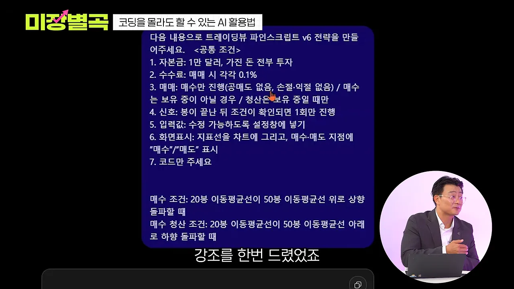
| 번호 | 공통 조건 | 작가가 넣은 이유 |
|---|---|---|
| 1 | 자본금 1만 달러, 가진 돈 전부 투자 | 가장 단순한 원칙으로 비교하려고 |
| 2 | 매매 시 각각 수수료 0.1% | 수수료가 꼭 들어가야 결과가 실제에 가까워요 |
| 3 | 매수만 진행, 보유 중이 아닐 때만 매수, 보유 중일 때만 청산 | 주식은 매수만 할 수 있어서(선물·코인은 양방향 가능) |
| 4 | 봉이 끝난 뒤 조건이 확인되면 1회만 진행 | 가격이 움직이는 동안 이동평균선이 붙었다 떨어졌다 하는 걸 막으려고 |
| 5 | 입력값을 설정창에서 수정 가능하게 | 코드를 고치지 않고 숫자를 바꿔 보려고 |
| 6 | 지표선을 그리고 매수·매도 지점 표시 | 제대로 사고팔았는지 눈으로 확인하려고 |
| 7 | 코드만 주세요 | 설명 없이 복사해서 바로 붙여 넣으려고 |
코드를 붙여 넣고 결과 보기
코드만 달라고 했기 때문에 ChatGPT는 설명 없이 코드만 줘요. 이걸 복사해서 트레이딩뷰 오른쪽의 파인 에디터에 붙여 넣고, 저장한 뒤 '차트에 넣기'를 누르면 바로 반영돼요. 아래 화면 오른쪽 파란 블록이 붙여 넣은 코드예요.
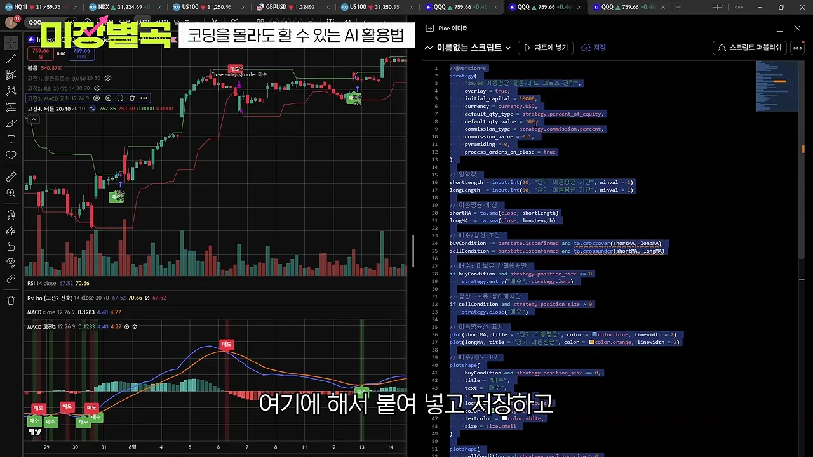
데이터가 2015년부터라 너무 길어서, 작가는 '최근 365일'만 보여 줘요. 아래 '20/50 이동평균 골든/데드 크로스 전략' 칸을 보면 총 PnL +7.27%, 최대 손실폭 10.89%, 수익성 거래 '28.57% 6/21'이에요.
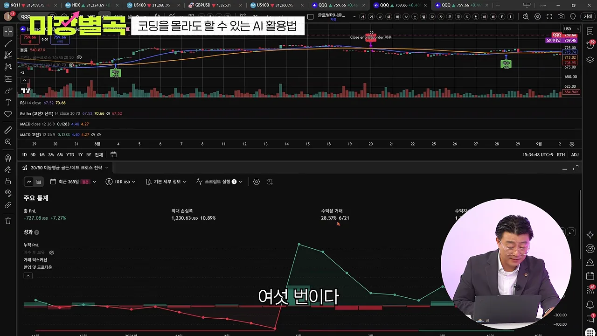
5번 조건 덕분에 설정 버튼을 누르면 '인풋' 탭에서 숫자를 바꿀 수 있어요. 20과 50 대신 15와 45를 넣고 확인을 누르면, 코드를 건드리지 않아도 차트와 결과가 다시 계산돼요.
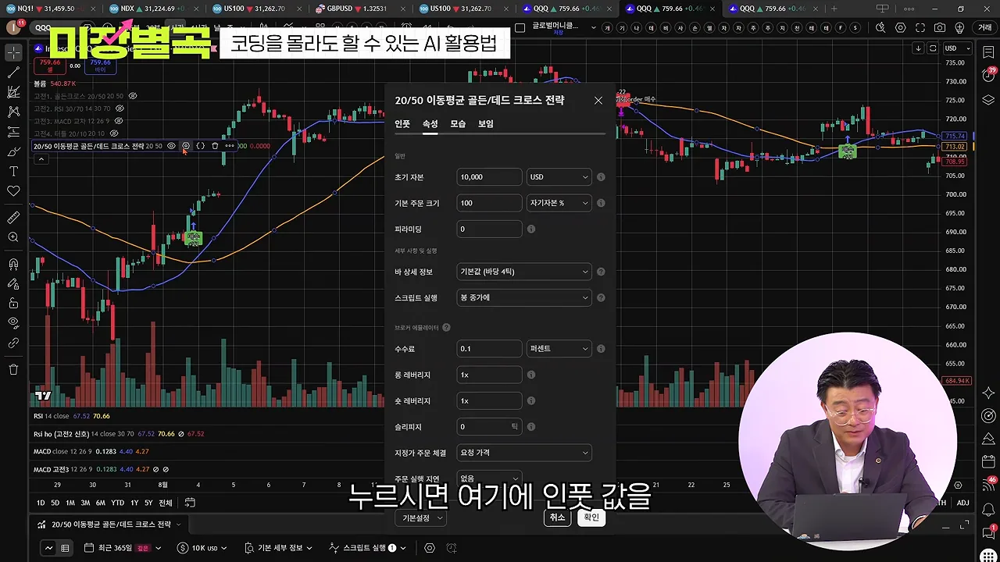
AI가 규칙을 제대로 옮겼는지 확인하는 법
- 매매 횟수가 지나치게 많지 않나요? 1시간 봉에서 1년에 200~300번이면 로직 자체가 잘못 짜인 거예요.
- 너무 적지는 않나요? 100번 중 90번 이긴 것과 달리, 10번 중 9번 이긴 것은 통계적으로 의미가 약해요.
- 다른 AI에게 다시 물어봤나요? ChatGPT가 만든 코드를 Gemini에게 보여 주고 "잘 만들었는지 확인해 달라"고 하면 돼요.
작가는 두 LLM(Large Language Model)을 함께 쓰면 어느 쪽이 코드를 더 잘 만드는지도 직접 비교해 볼 수 있다고 덧붙여요.
결과를 볼 때 주의할 점과 포워드 테스트
작가는 백테스트 결과를 볼 때 조심할 점을 세 가지로 정리해요. 첫째가 수수료예요. 아래 표는 네 전략을 같은 기간에 수수료만 바꿔 돌린 결과예요. 맨 오른쪽 '매매' 열의 MACD 61회가 눈에 띄어요. 수수료 0일 때 +6.71%였는데, 편도 0.1%에서 -5.19%, 0.25%에서 -20.38%까지 떨어져요.
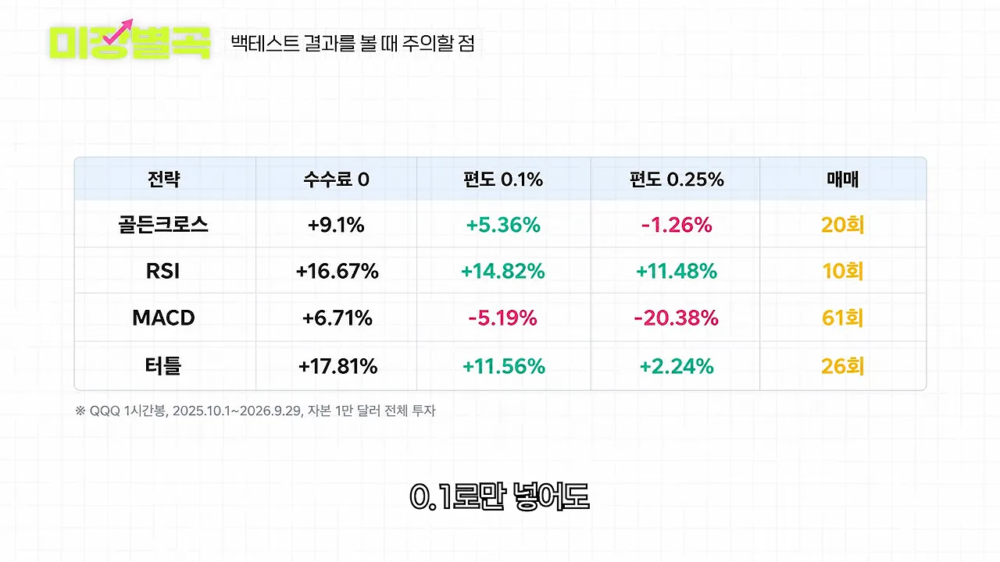
둘째는 기간이에요. 이번 백테스트 기간은 상승장이라 사서 들고만 있어도(바이앤홀드) 돈을 벌었어요. 기간을 상승장과 하락장으로 나눠서 각각 어떻게 움직이는지 꼭 봐야 해요. 하락장에서 잘 듣는 전략과 상승장에서 수익을 내는 전략을 섞거나 고쳐 쓰면 좋다고 해요.
셋째는 승률이에요. 승률 90%가 잔 펀치로 아홉 번 이기고 큰 펀치로 한 번 크게 진 결과일 수 있어요. 승률이 높다고 꼭 좋은 전략은 아니에요.
남이 만든 전략을 AI로 해석하기
진행자는 그래도 남는 의문을 다시 꺼내요. 답이 공개된 수능 문제를 푼 게 무슨 의미가 있느냐는 거예요. 작가는 포워드 테스트 예시로 답해요. 방송 준비를 시작한 9월 29일에 트레이딩뷰에서 인기 있는 'Flawless Victory' 전략을 QQQ에 걸어 뒀어요. 원래는 비트코인 15분 봉에 쓰는 전략이에요. 아래 화면 오른쪽 파인 에디터 맨 위에 'Trebor_Namor의 Flawless Victory Strat…'이라는 이름이 보여요.
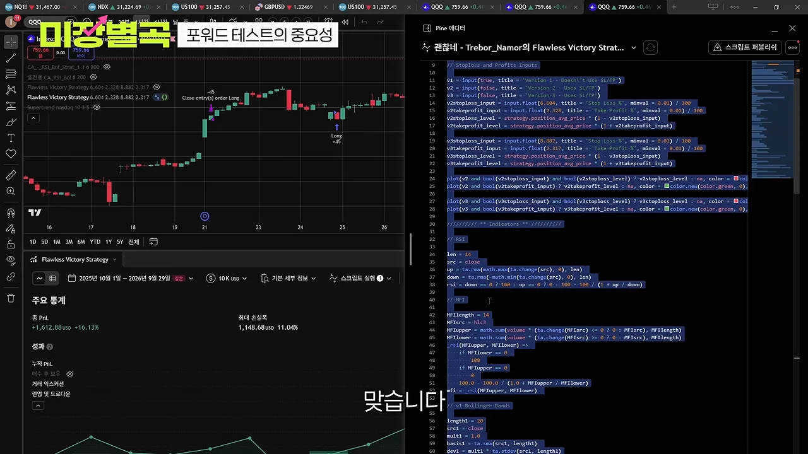
어떤 전략인지는 작가가 설명하지 않고 ChatGPT에게 맡겨요. 코드를 붙여 넣고 "매수·매도 전략이 어떤 건지 설명해 달라", "코드에 오류가 있는지도 체크해 달라"고 덧붙였어요. 아래 답을 보면 이 코드에는 v1·v2·v3 세 버전이 들어 있고, 버전마다 매수 기준·매도 기준·손절/익절 여부가 표로 정리돼 있어요. 예를 들어 v1은 '볼린저밴드 하단 이탈 + RSI > 42'에 사고 '볼린저밴드 상단 돌파 + RSI > 70'에 팔며, 손절·익절은 없어요.
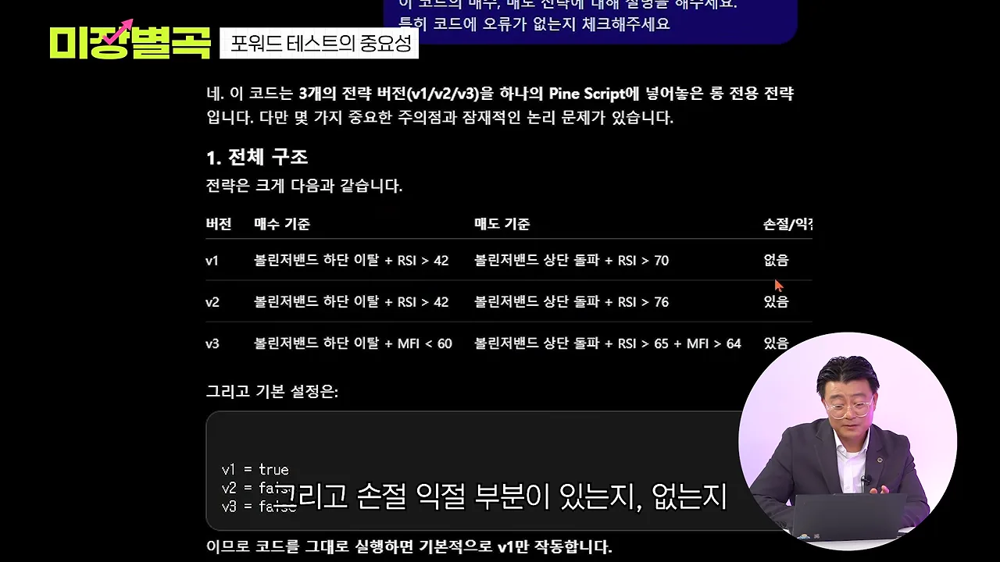
사람이 코드를 한 줄씩 뜯어보려면 오래 걸려요. 작가가 앞에서 "GPT가 만든 걸 Gemini에게 물어보라"고 한 이유도 이렇게 AI로 검증할 수 있기 때문이에요.
일주일 뒤에 열어 본 결과
백테스트 종료일을 오늘 날짜로 바꾸자 아래 화면처럼 기간이 '2025년 10월 1일 ~ 2026년 10월 7일'로 늘어나고, 총 PnL이 +18.66%가 돼요. 같은 기간 QQQ는 24.85%였다고 해요.
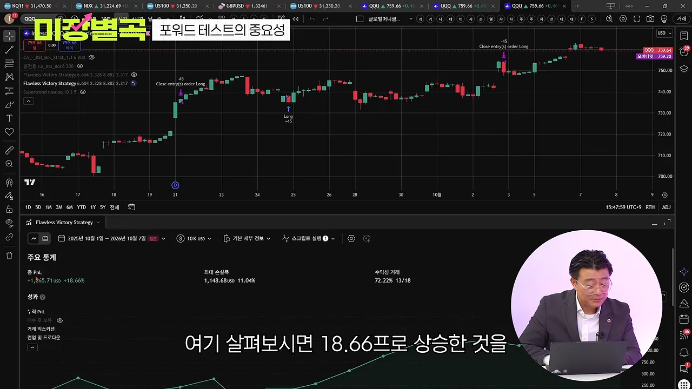
작가도 일주일은 아주 짧은 기간이고, 이렇게 짧게 포워드 테스트를 하는 경우는 극히 드물다고 말해요. 6개월에서 1년까지 포워드 테스트로 실제 매매와의 괴리를 확인한 뒤, 소액 계좌로 조금씩 해 보라고 권해요.
남이 올린 전략 찾기
전략을 처음부터 만들기는 어려워요. 트레이딩뷰 상단의 '인디케이터, 지표 및 스트래티지' 메뉴를 누르면 아래 창이 떠요. 왼쪽 목록의 '에디터스 픽'은 트레이딩뷰 에디터가 고른 전략이고, '탑'은 인기순이에요.
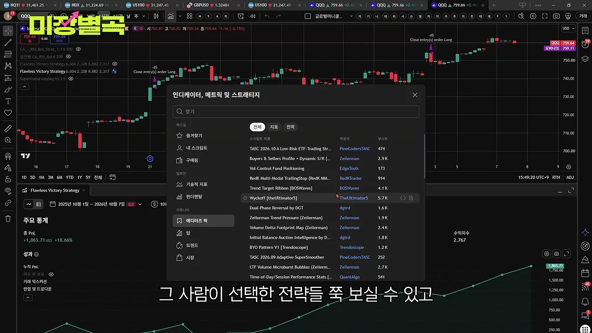
작가는 실제로 어떻게 매매하나요
포워드 테스트까지 끝나면 작가는 국내 시스템 트레이딩 프로그램인 예스트레이더로 같은 전략을 다시 코딩해요. 트레이딩뷰와 비슷한 수준의 결과가 나오면 그때 예스트레이더로 실계좌 매매를 해요. 기출문제라는 백테스트의 약점을 포워드 테스트와 다른 프로그램으로 한 번 더 검증해서 메우는 거예요.
작가는 더 버는 것보다 잃지 않는 게 더 중요하다고 말해요. 얻을 수익보다 손실이 클 것 같으면 시스템이나 매매를 멈추는 것도 방법이에요. 진행자는 이런 전략을 "냉철한 로봇 같은 주식 친구"에 비유해요. 맞다고 생각할 때 친구의 전략을 빌려 쓰고, 내 감이나 펀더멘털 판단이 더 맞다고 보면 그쪽을 따르면 된다는 거예요. 작가도 이게 답이 아니라 수많은 매매 방법 중 하나이고, 방법들의 장점을 어떻게 섞어 쓰느냐가 중요하다고 맺어요.
이게 답이 아니고요. 수많은 매매하는 방법 중에 하나일 뿐이고 그 방법들을 어떻게 섞어서 또는 장점을 갈무리해서 쓸 수 있느냐가 중요하지 않을까 싶습니다.
— 영상 48:40